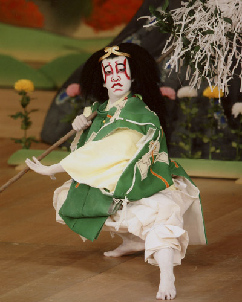

プロフィール
 > 尾上右近
> 尾上右近

「紅葉狩」山神
尾上右近
平成４年（1992年）５月２８日、七代目清元延寿太夫の次男として生まれる。曾祖父は六代目尾上菊五郎。
１２年4月、本名の岡村研祐で、歌舞伎座『舞鶴雪月花』の松虫を勤め初舞台。名子役としての評価は高く、平成17年1月新橋演舞場『人情噺文七元結』の長兵衛娘お久ほかで二代目尾上右近を襲名。
舞踊に才能を示し、20年2月大阪松竹座『連獅子』の仔獅子の精、4月金丸座『供奴』などで注目を集める。
20年7月歌舞伎座『高野聖』の次郎、11月歌舞伎座『船弁慶』の駿河次郎など、次代を担う歌舞伎俳優として修業を重ねている。
Copyright © Otowaya All Rights Reserved.